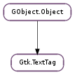

| static | new(name) |
| event(event_object, event, iter) | |
| get_priority() | |
| set_priority(priority) |
| Name | Type | Flags | Description |
|---|---|---|---|
| accumulative-margin | bool | r/w | Whether left and right margins accumulate. |
| background | str | w | Background color as a string |
| background-full-height | bool | r/w | Whether the background color fills the entire line height or only the height of the tagged characters |
| background-full-height-set | bool | r/w | Whether this tag affects background height |
| background-gdk | Gdk.Color | r/w | Background color as a Gdk.Color |
| background-rgba | Gdk.RGBA | r/w | Background color as a Gdk.RGBA |
| background-set | bool | r/w | Whether this tag affects the background color |
| direction | Gtk.TextDirection | r/w | Text direction, e.g. right-to-left or left-to-right |
| editable | bool | r/w | Whether the text can be modified by the user |
| editable-set | bool | r/w | Whether this tag affects text editability |
| family | str | r/w | Name of the font family, e.g. Sans, Helvetica, Times, Monospace |
| family-set | bool | r/w | Whether this tag affects the font family |
| font | str | r/w | Font description as a string, e.g. “Sans Italic 12” |
| font-desc | Pango.FontDescription | r/w | Font description as a Pango.FontDescription struct |
| foreground | str | w | Foreground color as a string |
| foreground-gdk | Gdk.Color | r/w | Foreground color as a Gdk.Color |
| foreground-rgba | Gdk.RGBA | r/w | Foreground color as a Gdk.RGBA |
| foreground-set | bool | r/w | Whether this tag affects the foreground color |
| indent | int | r/w | Amount to indent the paragraph, in pixels |
| indent-set | bool | r/w | Whether this tag affects indentation |
| invisible | bool | r/w | Whether this text is hidden. |
| invisible-set | bool | r/w | Whether this tag affects text visibility |
| justification | Gtk.Justification | r/w | Left, right, or center justification |
| justification-set | bool | r/w | Whether this tag affects paragraph justification |
| language | str | r/w | The language this text is in, as an ISO code. Pango can use this as a hint when rendering the text. If not set, an appropriate default will be used. |
| language-set | bool | r/w | Whether this tag affects the language the text is rendered as |
| left-margin | int | r/w | Width of the left margin in pixels |
| left-margin-set | bool | r/w | Whether this tag affects the left margin |
| name | str | r/w/c | Name used to refer to the text tag. None for anonymous tags |
| paragraph-background | str | w | Paragraph background color as a string |
| paragraph-background-gdk | Gdk.Color | r/w | Paragraph background color as a Gdk.Color |
| paragraph-background-rgba | Gdk.RGBA | r/w | Paragraph background RGBA as a Gdk.RGBA |
| paragraph-background-set | bool | r/w | Whether this tag affects the paragraph background color |
| pixels-above-lines | int | r/w | Pixels of blank space above paragraphs |
| pixels-above-lines-set | bool | r/w | Whether this tag affects the number of pixels above lines |
| pixels-below-lines | int | r/w | Pixels of blank space below paragraphs |
| pixels-below-lines-set | bool | r/w | Whether this tag affects the number of pixels above lines |
| pixels-inside-wrap | int | r/w | Pixels of blank space between wrapped lines in a paragraph |
| pixels-inside-wrap-set | bool | r/w | Whether this tag affects the number of pixels between wrapped lines |
| right-margin | int | r/w | Width of the right margin in pixels |
| right-margin-set | bool | r/w | Whether this tag affects the right margin |
| rise | int | r/w | Offset of text above the baseline (below the baseline if rise is negative) in Pango units |
| rise-set | bool | r/w | Whether this tag affects the rise |
| scale | float | r/w | Font size as a scale factor relative to the default font size. This properly adapts to theme changes etc. so is recommended. Pango predefines some scales such as PANGO_SCALE_X_LARGE |
| scale-set | bool | r/w | Whether this tag scales the font size by a factor |
| size | int | r/w | Font size in Pango units |
| size-points | float | r/w | Font size in points |
| size-set | bool | r/w | Whether this tag affects the font size |
| stretch | Pango.Stretch | r/w | Font stretch as a Pango.Stretch, e.g. Pango.Stretch.CONDENSED |
| stretch-set | bool | r/w | Whether this tag affects the font stretch |
| strikethrough | bool | r/w | Whether to strike through the text |
| strikethrough-set | bool | r/w | Whether this tag affects strikethrough |
| style | Pango.Style | r/w | Font style as a Pango.Style, e.g. Pango.Style.ITALIC |
| style-set | bool | r/w | Whether this tag affects the font style |
| tabs | Pango.TabArray | r/w | Custom tabs for this text |
| tabs-set | bool | r/w | Whether this tag affects tabs |
| underline | Pango.Underline | r/w | Style of underline for this text |
| underline-set | bool | r/w | Whether this tag affects underlining |
| variant | Pango.Variant | r/w | Font variant as a Pango.Variant, e.g. Pango.Variant.SMALL_CAPS |
| variant-set | bool | r/w | Whether this tag affects the font variant |
| weight | int | r/w | Font weight as an integer, see predefined values in Pango.Weight ; for example, Pango.Weight.BOLD |
| weight-set | bool | r/w | Whether this tag affects the font weight |
| wrap-mode | Gtk.WrapMode | r/w | Whether to wrap lines never, at word boundaries, or at character boundaries |
| wrap-mode-set | bool | r/w | Whether this tag affects line wrap mode |
| Name | Parameters | Return | Description |
|---|---|---|---|
| event | GObject.Object, Gdk.Event, Gtk.TextIter | bool | The ::event signal is emitted when an event occurs on a region of the buffer marked with this tag. |
| Name | Type | Access |
|---|---|---|
| parent_instance | GObject.Object | r |
Bases: GObject.Object
You may wish to begin by reading the text widget conceptual overview which gives an overview of all the objects and data types related to the text widget and how they work together.
Tags should be in the Gtk.TextTagTable for a given Gtk.TextBuffer before using them with that buffer.
Gtk.TextBuffer.create_tag () is the best way to create tags. See gtk3-demo for numerous examples.
For each property of Gtk.TextTag, there is a “set” property, e.g. “font-set” corresponds to “font”. These “set” properties reflect whether a property has been set or not. They are maintained by GTK+ and you should not set them independently.
| Parameters: | name (str or None) – tag name, or None |
|---|---|
| Returns: | a new Gtk.TextTag |
| Return type: | Gtk.TextTag |
Creates a Gtk.TextTag. Configure the tag using object arguments, i.e. using GObject.Object.set ().
| Parameters: |
|
|---|---|
| Returns: | True to stop other handlers from being invoked for the event. False to propagate the event further. |
| Return type: |
The ::event signal is emitted when an event occurs on a region of the buffer marked with this tag.
| Parameters: | priority (int) – the new priority |
|---|
Sets the priority of a Gtk.TextTag. Valid priorities start at 0 and go to one less than Gtk.TextTagTable.get_size (). Each tag in a table has a unique priority; setting the priority of one tag shifts the priorities of all the other tags in the table to maintain a unique priority for each tag. Higher priority tags “win” if two tags both set the same text attribute. When adding a tag to a tag table, it will be assigned the highest priority in the table by default; so normally the precedence of a set of tags is the order in which they were added to the table, or created with Gtk.TextBuffer.create_tag (), which adds the tag to the buffer’s table automatically.